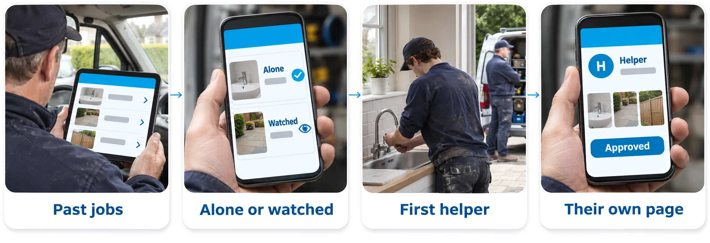
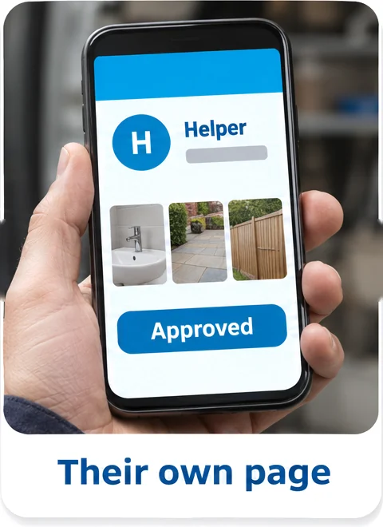
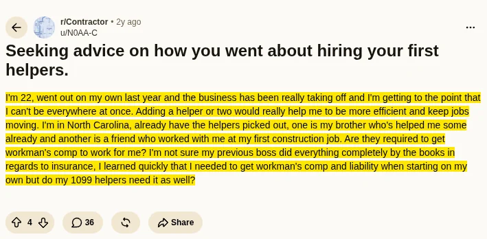

Second Truck Sandbox





- Problem
- I cannot hire help without watching every job myself.
- Who has it
- Solo owners ready for a first helper.
- What people say
- “I'm getting to the point that I can't be everywhere at once.” u/N0AA-C, Reddit r/Contractor, 2024

Open the post